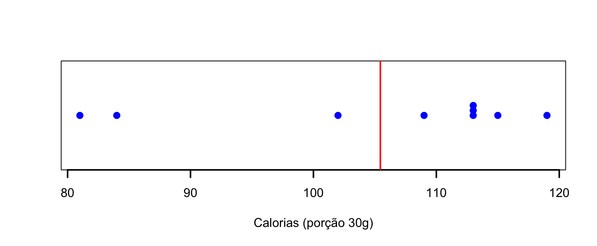
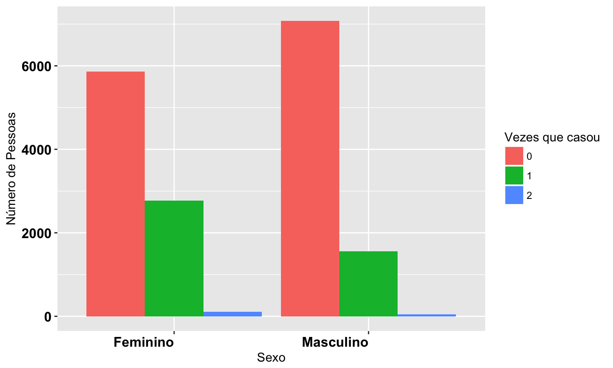
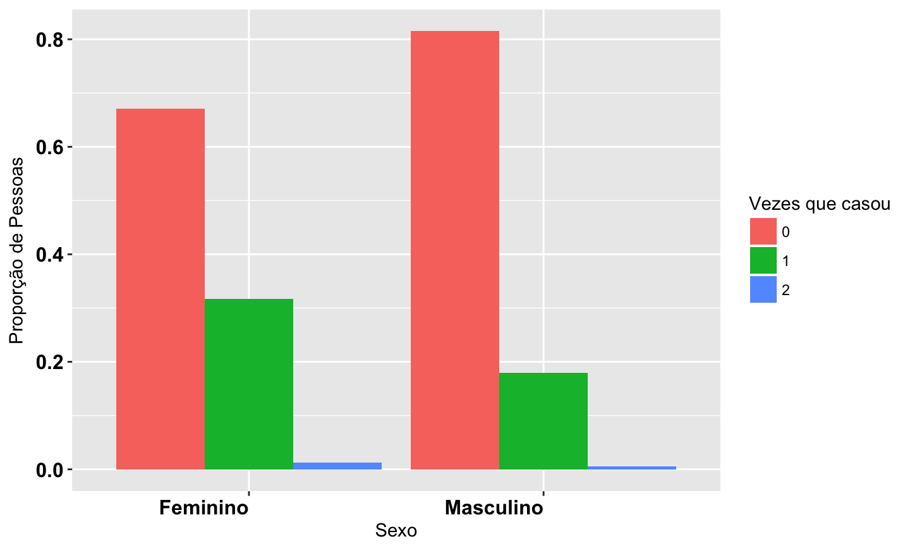
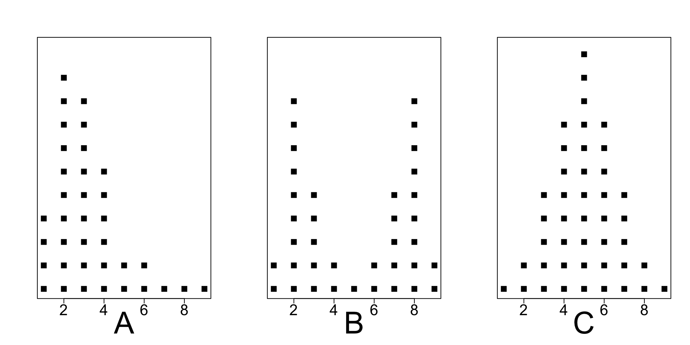
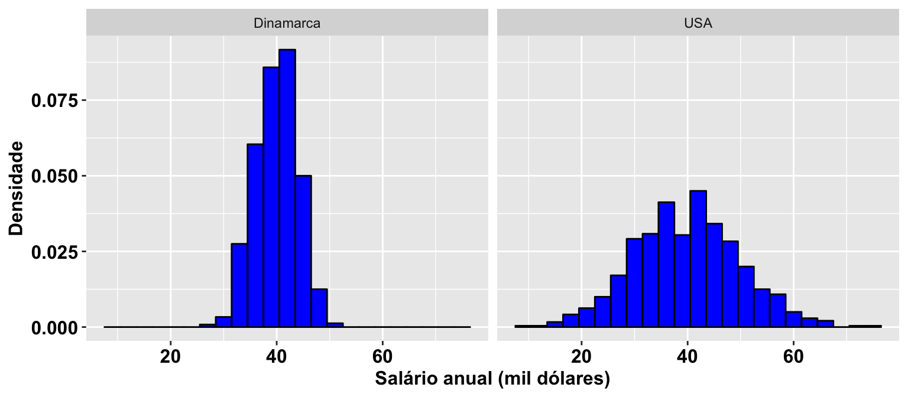
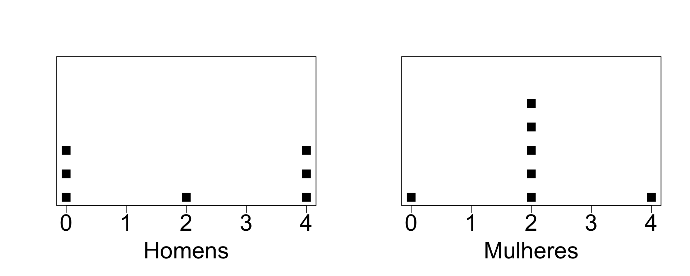
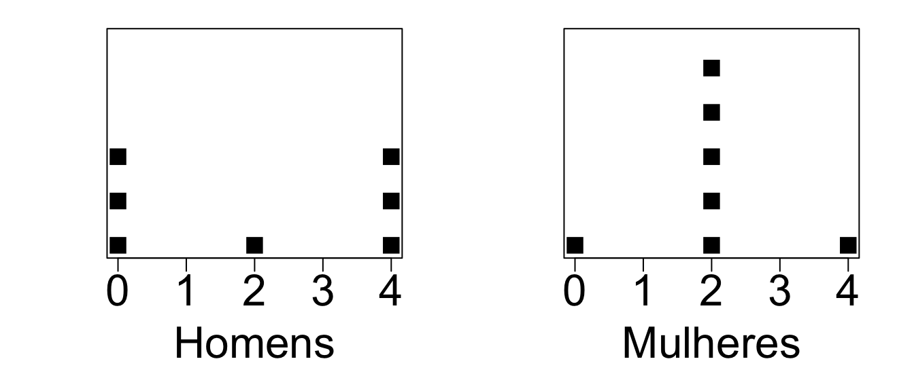

Estatísticas Sumárias: resumindo dados
Introdução
Vimos na aula anterior como usar gráficos e tabelas para resumir os dados.
Podemos também usar estatísticas: quantidades numéricas calculadas a partir dos dados.
Por exemplo, podemos estar interessados em encontrar qual seria um valor "típico" do conjunto de dados.
Podemos então usar uma estatística que descreva o centro da distribuição dos dados.
Objetivo: resumir os dados, através de valores que representem o conjunto de dados em relação à alguma característica (posição, dispersão).
Medidas de Posição Central
Média Aritmética
Se \(x_1, x_2, \ldots, x_n\) são as \(n\) observações, a média é:
\[\bar{x}=\frac{1}{n}\sum_{i=1}^nx_i\,.\]
A média pode ser interpretada como o ponto de equilíbrio de uma distribuição.

Exemplo: Cereais matinais

Exemplo: Cereais matinais
Porção de 30g:
## Cereal Calorias Carboidratos ## 1 Sucrilhos 109 26.0 ## 2 All Bran 81 13.5 ## 3 Nesfit 102 21.0 ## 4 Nescau 115 23.0 ## 5 Snow 113 25.0 ## 6 Crunch 119 23.0 ## 7 Moça 113 25.0 ## 8 Fibra Mais 84 15.0 ## 9 Froot Loops 113 25.0
Exemplo: Cereais matinais
Exemplo: Cereais matinais
\(x_i\): calorias do cereal \(i\).
\[\bar{x}=\frac{1}{n}\sum_{i=1}^nx_i=\frac{1}{9}\sum_{i=1}^9x_i=105.44\]
Mediana
A mediana é o valor que deixa 50% das observações abaixo dele e 50% acima.
Determinando a mediana:
- Ordene as \(n\) observações.
- Se \(n\) é ímpar, a mediana é o valor do meio, na sequência ordenada.
- Se \(n\) é par, a mediana é a média aritmética das duas observações que caem no meio da sequência ordenada.
Exemplo: Cereais matinais
Calorias dos 9 cereais:
## [1] 109 81 102 115 113 119 113 84 113
Ordenando:
## [1] 81 84 102 109 113 113 113 115 119
Mediana é 113 (5ª observação).
Se descartássemos o maior valor, 119, teríamos oito observações e aí a mediana seria: \[\mbox{mediana} = \frac{109 + 113}{2} = 111.\]
Moda
A moda é o valor mais frequente.
Calorias dos 9 cereais:
## [1] 109 81 102 115 113 119 113 84 113
Tabela de frequências:
## ## 81 84 102 109 113 115 119 ## 1 1 1 1 3 1 1
Portanto a moda de calorias dos cereias é 113.
Exemplo: Emissão de \(CO_2\)
Emissão per capita (em toneladas) para 8 países, em 2009 (http://data.worldbank.org):
| País | Emissão \(CO_2\) | País | Emissão \(CO_2\) |
|---|---|---|---|
| China | 5.8 | Brazil | 1.9 |
| Índia | 1.7 | Rússia | 11.1 |
| EUA | 17.3 | Paquistão | 0.9 |
| Indonésia | 1.9 | Bangaladesh | 0.3 |
Exemplo: Emissão de \(CO_2\)
\(\bar{x}=\frac{1}{8}(5.8+1.7+17.3+1.9+1.9+11.1+0.9+0.3)\approx5.11\)
Ordenando:
## [1] 0.3 0.9 1.7 1.9 1.9 5.8 11.1 17.3
Mediana é 1.9.
Exemplo: Emissão de \(CO_2\)
A mediana é bem menor do que a média.
Se desconsiderarmos os EUA:
## [1] 5.8 1.7 1.9 1.9 11.1 0.9 0.3
\(\bar{x}=\frac{1}{7}(5.8+1.7+1.9+1.9+11.1+0.9+0.3)\approx 3.37\)
Ordenando:
## [1] 0.3 0.9 1.7 1.9 1.9 5.8 11.1
Mediana é 1.9.
Mediana é menos afetada por valores muito extremos (muito diferentes do resto das observações).
Exemplo: número de casamentos
| Total de vezes que casou (\(x_{i}\)) | Frequência (mulheres) | Frequência (homens) |
|---|---|---|
| 0 | 5861 | 7074 |
| 1 | 2773 | 1561 |
| 2 | 105 | 43 |
| Total | 8739 | 8678 |
Qual medida de posição você usaria para apresentar a diferença entre homens e mulheres?
Exemplo: número de casamentos
A moda entre os homens é:
\(0\).
A moda entre as mulheres é:
\(0\).
Para as mulheres, a amostra ordenada é: \[\underbrace{0\,0\,0\,\ldots0}_{\mbox{5861 0's}}\quad \underbrace{1\,1\,1\,\ldots1}_{\mbox{2773 1's}} \quad \underbrace{2\,2\,2\,\ldots2}_{\mbox{105 2's}}\]
Como \(n=8739\) é ímpar, a observaçãoo central está na posição \((1+8739)/2=4370\). A observação 4370 é 0, portanto a mediana é 0 para as mulheres. Similarmente, para os homens, a mediana é 0.
Exemplo: número de casamentos
Média entre as mulheres:
\[\bar{x}=\frac{0\times 5861+1\times 2773+2\times 105}{8739}=0.34\]
Média entre os homens: \(\bar{x}=0.19\).
Para dados discretos com poucos valores diferentes, a mediana ignora muita informação.
Exemplo: número de casamentos
No entanto, como neste caso temos apenas os valores 0, 1 e 2, podemos apresentar os dados usando gráficos de barra.

Exemplo: número de casamentos

Mediana é resistente a observações discrepantes
Considere os três conjuntos de dados abaixo:
\[A: 8,9,10,11,12\]
\[B: 8,9,10,11,100\]
\[C: 8,9,10,11,1000\]
Média de \(A\): 10. Mediana de \(A\): 10.
Média de \(B\): 27.6. Mediana de \(B\): 10.
Média de \(C\): 207.6. Mediana de \(C\): 10.
Exemplo: Transporte
Uma empresária cuja empresa está localizada na Av. Paulista, em São Paulo, está preocupada com a quantidade de gasolina gasta pelos seus funcionários. Ela quer promover o uso de transporte público entre seus funcionários. Ela decide investigar a extensão, em km, do trajeto percorrido por cada funcionário caso usassem transporte público durante um dia típico.
Para seus 10 funcionários, os valores são:
\[1,1,4,1,1,1,10,1,6,1\]
Encontre a média, a mediana e a moda.
Média é 2.7.
Ordenando: 1,1,1,1,1,1,1,4,6,10.
Mediana é 1. Moda é 1.
Exemplo: Transporte
A empresária acabou de contratar um novo funcionário. Ele percorre 90 km em transporte público. Recalcule a média e a mediana.
\[1,1,4,1,1,1,10,1,6,1,90\]
Ordenada: 1,1,1,1,1,1,1,4,6,10,90.
Mediana é 1.
Média é 10.64
Qual medida de posição representa melhor a distância do grupo de funcionários?
Exemplo: Acidentes com Moto
Dados: entrevistas com 60 pessoas, em que cada uma relata o número de acidentes com moto que sofreu no último ano.
Por que a média seria provavelmente mais útil do que a mediana para resumir os dados?
Exemplo: Salários
A média salarial anual em 1998 nos EUA para pessoas com ensino superior era $528.200.
A mediana do salário anual em 1998 nos EUA para pessoas com ensino superior era $146.400.
Por que a média e a mediana diferem tanto?
Qual medida de posição você acredita que retrata de maneira mais realística um salário típico de pessoas com ensino superior nos EUA em 1998?
Exemplo: Sindicato
O sindicato dos trabalhadores está reivindicando aumento de salário em uma certa fábrica.
Explique por que o sindicato poderia usar a mediana dos salários de todos os empregados para justificar um aumento, enquanto que o gerente da fábrica poderia usar a média para argumentar que um aumento não é necessário?
Média, mediana e a distribuição dos dados
A figura a seguir mostra gráficos para três conjuntos de dados: A, B e C.

Média, mediana e a distribuição dos dados
Para quais conjuntos de dados, você esperaria que a média e a mediana tivessem o mesmo valor?
Para quais conjuntos de dados, você esperaria que a média e a mediana tivessem valores diferentes?
Qual valor seria maior: a média ou a mediana?
Gráfico A: média é 3.36, mediana é 3.
Gráfico B: média é 5, mediana é 5.
Gráfico C: média é 5, mediana é 5.
Assimetria (Caso Unimodal)
Se os dados são simétricos, a média coincide com a mediana e a moda.
Assimetria à direita (positiva): Média > Mediana > Moda
Assimetria à esquerda (negativa): Média < Mediana < Moda
Medidas de Dispersão
Exemplo: Salário professor de música
Salário anual hipotético de professores de música na Dinamarca (esquerda) e nos EUA (direita).

Média salarial Dinamarca: 40.02. Média salarial EUA: 39.87.
Amplitude
Uma medida de dispersão é amplitude: a diferença entre o maior e o menor valor observado na amostra.
Na Dinamarca, os salários variam de 27 a 52.
Amplitude dos salários na Dinamarca: \(52-27=25\).
Nos EUA, variam de 9 a 75.
Amplitude dos salários nos EUA: \(75-9 = 66\).
Problema com a amplitude: utiliza apenas duas observações (a máxima e a mínima).
Medidas de dispersão
Considere dois conjuntos de dados:
\(A=\{1,2,5,6,6\}\) e \(B=\{ -40,0,5,20,35\}\)
Ambos com média 4 e mediana 5.
No entanto, claramente temos que os valores de \(B\) são mais dispersos do que em \(A\).
Que medida podemos usar para considerar essa característica dos dados?
Medidas de dispersão
Podemos observar quão afastadas de uma determinada medida de posição estão as observações.
- Desvio de uma observação \(x_i\) da média \(\bar{x}\) é a diferença entre a observação e a média dos dados: \((x_i-\bar{x})\).
- O desvio é negativo quando a observação tem valor menor do que a média.
- O desvio é positivo quando a observação tem valor maior do que a média.
- Estamos interessados nos desvios de todos os pontos \(x_i\)'s, então poderia-se propor a seguinte medida de dispersão: \(\sum_{i=1}^n(x_i-\bar{x})\).
- Qual o problema?
- A média representa o ponto de balanço dos dados, então os desvios irão se contrabalancear, ou seja: \(\sum_{i=1}^n(x_i-\bar{x})=0\).
Medidas de dispersão
Além do mais, uma medida de dispersão onde os desvios positivos e negativos se cancelam, não seria útil.
Queremos que se leve em conta cada desvio, independente do sinal.
Alternativas:
\(\displaystyle \sum_{i=1}^n\mid x_i-\bar{x}\mid\)
\(\displaystyle \sum_{i=1}^n(x_i-\bar{x})^2\)
Ambas alternativas evitam que desvios iguais em módulo, mas com sinais opostos, se anulem.
Variância e Desvio-padrão
A média dos desvios ao quadrado é denominada variância: \[s^2=\frac{1}{n-1}\sum_{i=1}^n(x_i-\bar{x})^2\]
Desvio padrão é a raiz da variância:
\[s=\sqrt{\frac{1}{n-1} \sum_{i=1}^n(x_i-\bar{x})^2}\]
Interpretação: distância típica entre uma observação e a média dos dados.
Quanto maior \(s\), maior a dispersão dos dados.
Para facilitar cálculos: \(\sum_{i=1}^n(x_i-\bar{x})^2=\sum_{i=1}^nx_i^2-n\bar{x}^2\).
Exemplo
Conjunto de dados \(A: \{1,2,5,6,6\}\).
\(x_i\): \(\quad 1 \quad 2 \quad 5 \quad 6 \quad 6\)
\(\bar{x}\): \(\quad 4\)
\(x_i-\bar{x}\): \(\quad -3\quad -2\quad 1 \quad 2 \quad 2\)
\((x_i-\bar{x})^2\): \(\quad 9 \quad 4 \quad 1 \quad 4 \quad 4\)
\[s^2=\frac{9+4+1+4+4}{5-1}=5.5\]
Exemplo
Conjunto de dados \(B: \{-40,0,5,20,35\}\).
\(x_i\): \(\quad -40 \quad 0 \quad 5 \quad 20 \quad 35\)
\(\bar{x}\): \(\quad 4\)
\(x_i-\bar{x}\): \(\quad -44\quad -4\quad 1 \quad 16 \quad 31\)
\((x_i-\bar{x})^2\): \(\quad 1936 \quad 16 \quad 1 \quad 256 \quad 961\)
\[s^2=\frac{1936+16+1+256+961}{5-1}=792.5\]
Exemplo: "Qual o número ideal de filhos?"

Média: 2 (para ambos os sexos).
Amplitude: 4 (para ambos os sexos).

- Para homens: desvio típico da média parece estar em torno de 2.
- Para mulheres: desvio típico da média é menor do que o dos homens, pois a grande maioria das observações coincide com a própria média.
- Desvio-padrão entre homens: \(s=\sqrt{\frac{1}{n-1} \sum_{i=1}^n(x_i-\bar{x})^2}=2\,.\)
- Desvio-padrão entre mulheres: \(s=1.15\).
Exemplo: P1 de ME414
A primeira prova de ME414 teve um total de 100 pontos. Suponha que a média tenha sido 80.
Qual seria um valor plausível para o desvio padrão das notas da classe? \(s\): 0, 10 ou 50.
- \(s=0\): todos os alunos tiraram a mesma nota.
- \(s=50\): uma nota típica da classe estaria 50 pontos distante da média, ou seja, 30 ou 130 pontos.
- \(s=10\): notas típicas seriam de 70 ou 90.
Leitura
- Ross: seções 3.1, 3.2, 3.3, 3.4, 3.5
Slides produzidos pelos professores:
Samara Kiihl
Tatiana Benaglia
Benilton Carvalho